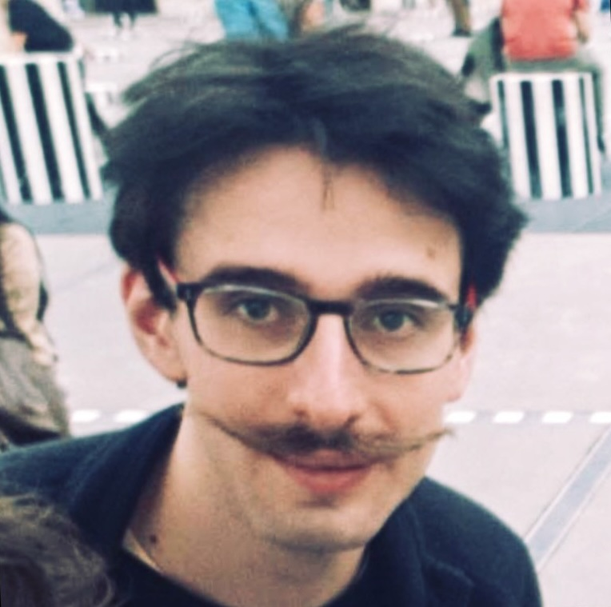
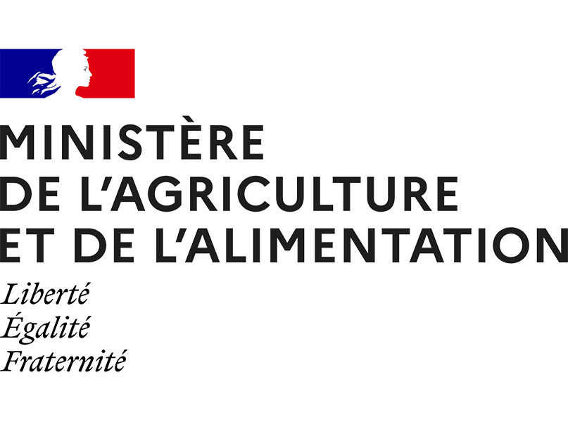
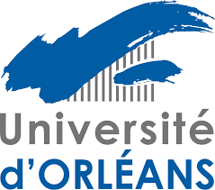
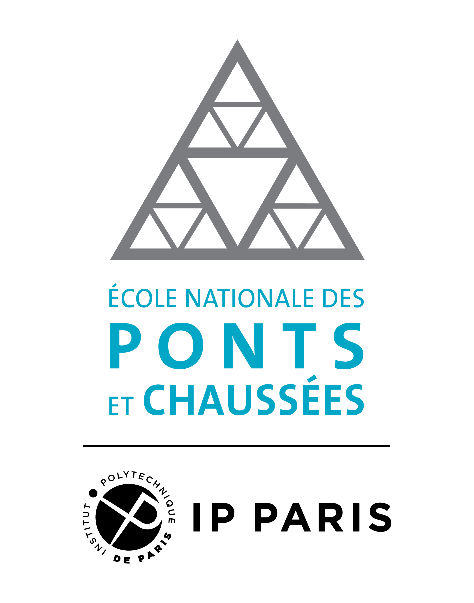

Hi! Welcome to my personal webpage!
I am a French civil servant engineer as a member of the ‘Corps of State Engineers of the Bridges, Waters and Forests’, which is a top-class corps of civil servants under the French Ministries of Agriculture and Ecological Transition. I graduated from École polytechnique and the University Paris-Saclay in France. My current research interests include theoretical ecology, ecological modeling, biostatistics, forest ecology, and natural risk assessment.
In September 2025, I started a PhD in the UR Écosystèmes forestiers (EFNO) research unit at INRAE in Nogent-sur-Vernisson (France) under the supervision of Dr. Frédéric Gosselin. The PhD project aims to study the relationship between saproxylic biodiversity and deadwood metrics in a forest using advanced statistical tools, including SDMs and JSDMs. As a permanent civil servant engineer, I am funded by the French Ministry of Agriculture during the preparation of my doctoral thesis.
Moreover, in my spare time, I enjoy studying the sociology of the French administrative elites and the French ‘Grands corps de l'État’. I am also keen on French poetry.
Do not hesitate to get in touch with me!
Contact Information
Affiliations
CV
Positions

Education



Honors & Awards
Supervision and Advising
Teaching
Service
Blog
Publications
Journal Articles
Conference Papers
Reports
Preprints & Under Review
In Preparation
Communications
Invited Talks
Conference Talks
Posters
Outreach
Research
My research spans multiple interconnected areas, with a focus on [overarching theme]. Below are the primary domains of my work:
Research Area One
Detailed description of your first research area. Explain the key problems you're addressing, your approach, and the impact of your work. Include specific techniques or methodologies you employ.
Research Area Two
Description of your second research area. Focus on what makes this work unique and important. Discuss how it relates to broader challenges in your field and what new insights your research provides.
Research Area Three
Overview of your third research area. Highlight the interdisciplinary nature of your work if applicable. Mention collaborations, applications, or real-world impact of your research in this area.
Research Area Four
Description of your fourth research area. Explain how this connects to your other work and contributes to your overall research program. Discuss future directions and open questions you're pursuing.